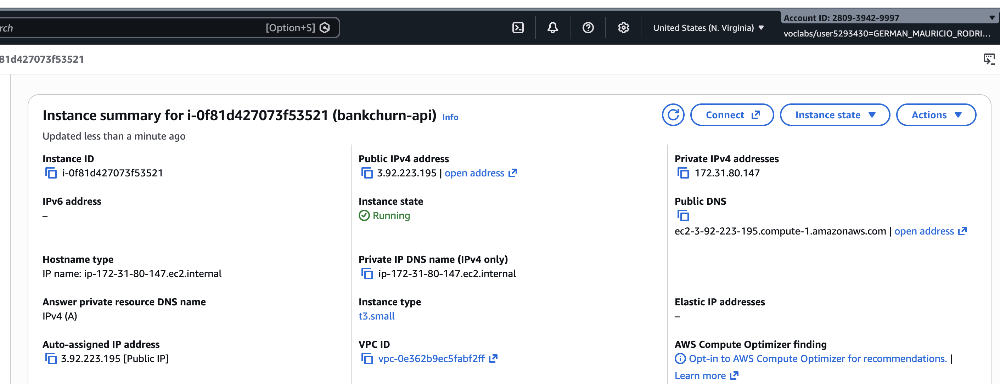
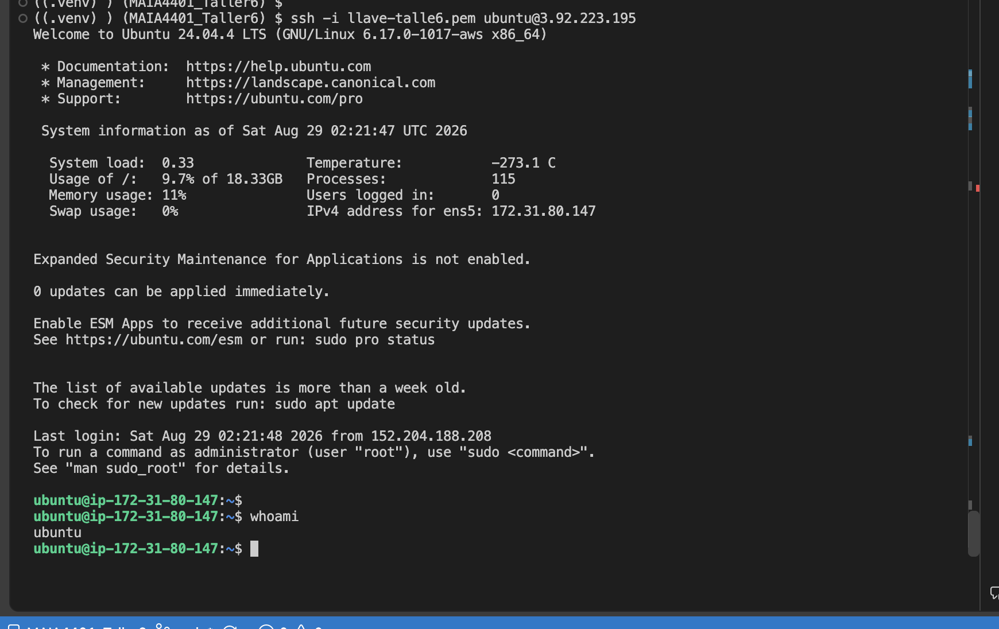
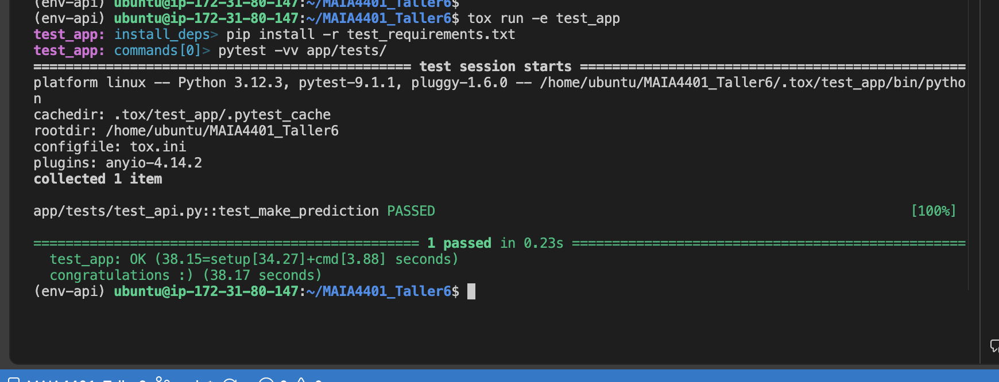
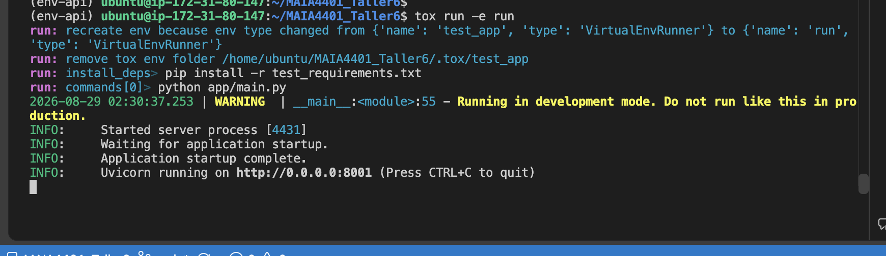
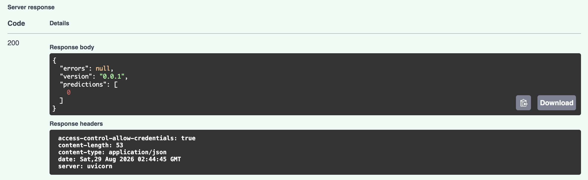
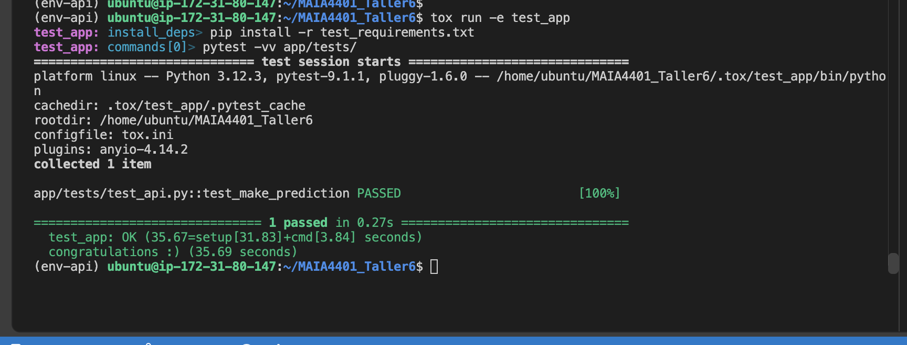
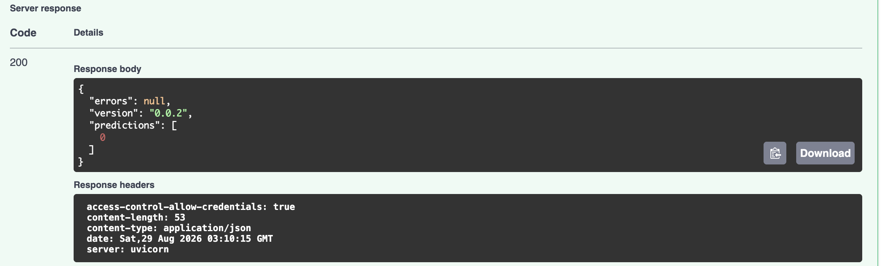
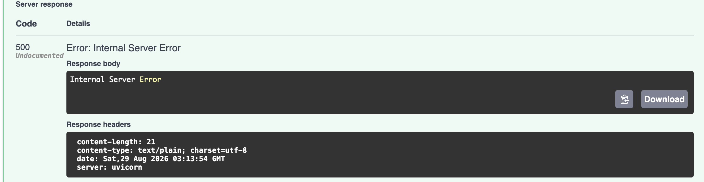

Autor: German Rodríguez
Curso: MAIA 4401 — MLOps
Fecha: Agosto 2026
En este taller se explora el servicio de predicciones del modelo de churn bancario a través de una API construida con FastAPI y ejecutada mediante Uvicorn. El flujo incluye el análisis de la estructura de la API, la configuración de una máquina virtual AWS EC2, la ejecución de pruebas automatizadas con tox y la interacción con las rutas de salud y predicción desde el navegador.
También se actualiza la API para utilizar la versión 0.0.2 del paquete del modelo,
construida en el Taller 5 después de eliminar la característica Customer_Age. Finalmente
se comparan las respuestas de la API al omitir una variable eliminada del modelo y otra
variable que todavía es requerida.
Durante el taller se realizaron las siguientes actividades:
/api/v1/health y /api/v1/predict desde la instancia EC2.model_abandono-0.0.2-py3-none-any.whl.El proyecto bankchurn-api está organizado como una aplicación Python independiente.
Su estructura principal es la siguiente:
bankchurn-api/
├── app/
│ ├── api.py
│ ├── config.py
│ ├── main.py
│ ├── schemas/
│ │ ├── health.py
│ │ └── predict.py
│ └── tests/
├── model-pkg/
│ └── model_abandono-0.0.1-py3-none-any.whl
├── requirements.txt
├── test_requirements.txt
├── typing_requirements.txt
├── tox.ini
└── Procfile
El archivo requirements.txt contiene las dependencias necesarias para ejecutar la API
y cargar el paquete del modelo:
uvicorn>=0.20.0,<0.30.0
fastapi>=0.88.0,<1.0.0
python-multipart>=0.0.5,<0.1.0
typing_extensions>=4.2.0,<5.0.0
loguru>=0.5.3,<1.0.0
El archivo test_requirements.txt agrega las dependencias necesarias para ejecutar las
pruebas automatizadas. El archivo typing_requirements.txt contiene las herramientas de
verificación de tipos y calidad de código. Estas dependencias se instalan de forma
separada para mantener diferenciados los ambientes de ejecución, prueba y revisión.
tox.iniEl archivo tox.ini define los ambientes test_app, run y checks. Para este taller
son especialmente importantes los dos primeros:
| Ambiente | Dependencias | Comando | Propósito |
|---|---|---|---|
test_app |
-rtest_requirements.txt |
pytest -vv app/tests/ |
Ejecuta las pruebas de la aplicación con salida detallada. |
run |
Las mismas dependencias de test_app |
python app/main.py |
Inicia el servidor de la API. |
checks |
-rtyping_requirements.txt |
flake8, isort, black y mypy |
Revisa estilo, formato y tipos. |
El ambiente run reutiliza el directorio del ambiente test_app mediante la propiedad
envdir = {toxworkdir}/test_app. Además, tox.ini establece PYTHONPATH=. y
PYTHONHASHSEED=0 para la ejecución de la aplicación y sus pruebas.
HealthEl esquema está definido en app/schemas/health.py y representa la respuesta de la ruta
de salud. Contiene tres campos de texto:
| Campo | Tipo | Descripción |
|---|---|---|
name |
str |
Nombre del proyecto o API. |
api_version |
str |
Versión de la aplicación. |
model_version |
str |
Versión del paquete del modelo cargado. |
En app/schemas/predict.py se definen dos modelos de Pydantic:
MultipleDataInputs: recibe una lista llamada inputs. Cada elemento de la lista
debe cumplir el esquema DataInputSchema, importado desde el paquete del modelo.PredictionResults: representa la respuesta de la predicción. Incluye errors,
version y predictions.El ejemplo incluido en el esquema muestra las variables originales del modelo, entre
ellas Customer_Age, Gender, Dependent_count, Education_Level, Credit_Limit,
Total_Trans_Amt y Avg_Utilization_Ratio. Este ejemplo será actualizado al utilizar
la versión 0.0.2, en la que se eliminó Customer_Age.
uvicorn.runEn app/main.py el servidor se inicia con:
uvicorn.run(app, host="0.0.0.0", port=8001, log_level="debug")
Los cuatro argumentos son:
| Argumento | Valor | Función |
|---|---|---|
app |
La instancia FastAPI | Indica qué aplicación debe ejecutar Uvicorn. |
host |
0.0.0.0 |
Permite aceptar conexiones desde todas las interfaces de red de la máquina virtual. |
port |
8001 |
Define el puerto en el que queda disponible el servidor. |
log_level |
debug |
Configura un nivel detallado de mensajes durante la ejecución. |
El archivo app/config.py define los parámetros globales de la aplicación mediante la
clase Settings:
API_V1_STR establece la ruta base /api/v1.PROJECT_NAME define el nombre visible de la API.BACKEND_CORS_ORIGINS contiene los orígenes permitidos para solicitudes CORS.LoggingSettings define el nivel de logging, inicialmente INFO.InterceptHandler redirige los mensajes del módulo estándar de logging hacia Loguru.setup_app_logging configura los loggers de Uvicorn y de la aplicación./La ruta raíz devuelve una respuesta HTML con el mensaje Welcome to the API y un enlace
a la documentación interactiva ubicada en /docs.
/api/v1/healthLa ruta de salud responde mediante el esquema Health. Construye un objeto con el nombre
del proyecto, la versión de la API y la versión del modelo instalado. Su objetivo es
comprobar que el servidor está activo y que el paquete del modelo puede cargarse.
Ejemplo de respuesta esperada:
{
"name": "Banckchurn API",
"api_version": "0.1.0",
"model_version": "0.0.1"
}
Los valores exactos de versión deben verificarse en la ejecución realizada.
/api/v1/predictLa ruta de predicción recibe un objeto con una lista de entradas. FastAPI y Pydantic validan la estructura recibida; después, el código realiza estas acciones:
DataFrame de pandas.NaN por None.make_prediction del paquete del modelo.400.Este es el primer paso de ejecución de la Parte 2. Se debe lanzar una instancia AWS EC2
con la configuración recomendada: tipo t3.small, sistema operativo Ubuntu 24.04 y
disco de 20 GB.
3.92.223.195us-east-1 (N. Virginia)i-0f81d427073f53521
Figura 2.1 — Consola de AWS EC2 con la máquina virtual en ejecución (numeral 2.1 — 5 pts).
El repositorio público MAIA4401_Taller6 fue creado en GitHub y contiene los archivos
del taller. La estructura de la raíz es:
repo/
├── app/
├── model-pkg/
├── requirements.txt
├── test_requirements.txt
├── typing_requirements.txt
├── tox.ini
└── Procfile
El repositorio se actualizó mediante:
git add .
git commit -m "API inicial de predicción bankchurn"
git push
https://github.com/germarodr/MAIA4401_Taller6Se debe establecer la conexión SSH con la llave privada entregada por AWS:
ssh -i /ruta/a/llave.pem ubuntu@3.92.223.195

Figura 2.3 — Conexión SSH exitosa a la VM (numeral 2.3 — 5 pts).
Dentro de la máquina virtual EC2 se actualizarán los paquetes y se instalarán pip, unzip y la herramienta para crear ambientes virtuales:
sudo apt update
sudo apt install python3-pip
sudo apt install zip unzip
sudo apt install python3.12-venv
python3 -m venv /home/ubuntu/env-api
source /home/ubuntu/env-api/bin/activate
La activación se verificó observando el prefijo (env-api) en la terminal.
Dentro de la VM EC2 se clonó el repositorio publicado en GitHub:
git clone https://github.com/germarodr/MAIA4401_Taller6.git
cd MAIA4401_Taller6
ls
La estructura se comprobó verificando que las carpetas app y model-pkg, junto con
los archivos de configuración, estuvieran en la raíz del repositorio.
Dentro de la VM EC2 se instalará Tox y se configurará el PATH:
pip install tox
sudo apt-get install tox
export PATH=$PATH:/home/ubuntu/.local/bin
tox --version
La versión instalada de tox fue 4.61.1.
tox run -e test_app
Este comando se ejecutará dentro de la VM EC2. Tox creará o reutilizará el ambiente
aislado, instalará las dependencias de prueba y ejecutará pytest -vv app/tests/.
La captura y el resultado que se incluirán aquí deben corresponder a esa ejecución.

Figura 2.12 — Ejecución del ambiente de pruebas de la API (numeral 2.12 — 10 pts).
tox run -e run
Este comando se ejecutará dentro de la VM EC2. El ambiente run ejecutará
python app/main.py y dejará el servidor Uvicorn escuchando en el puerto 8001.

Figura 2.13 — Ejecución del ambiente de ejecución de la API (numeral 2.13 — 10 pts).
En el grupo de seguridad asociado a la instancia EC2 se agregará una regla de entrada con las siguientes características:
| Campo | Valor |
|---|---|
| Tipo | TCP personalizado |
| Puerto | 8001 |
| Origen | Anywhere IPv4 (0.0.0.0/0) |
Esta regla permitirá acceder al servidor desde un navegador externo.
Una vez iniciado el servidor en la VM y abierto el puerto, la aplicación se abrirá en:
http://3.92.223.195:8001
La documentación interactiva se consultó en:
http://3.92.223.195:8001/docs
Desde Swagger UI se ejecutará primero /api/v1/health y posteriormente
/api/v1/predict, utilizando Try it out y Execute.
Durante la primera prueba, la ruta /api/v1/health devolvió un error 500 Internal Server Error. La causa fue que app/api.py invocaba health.model_dump(), un método propio de
Pydantic v2, mientras que el paquete del modelo fija Pydantic v1 (pydantic<2.0.0). En
Pydantic v1 el método equivalente es .dict(). Se corrigió la línea a return health.dict(),
se publicó el cambio en GitHub y se actualizó el repositorio en la máquina virtual antes de
repetir la prueba con éxito.

Figura 2.16 — Respuesta satisfactoria de la ruta de predicción (numeral 2.16 — 10 pts).
La respuesta exitosa obtenida fue:
{
"errors": null,
"version": "0.0.1",
"predictions": [
0
]
}
Al finalizar la prueba se detendrá el servidor con Ctrl+C.
En el Taller 5 se modificó el modelo para eliminar la característica Customer_Age y se
generó el paquete que se incorporará a la API:
model_abandono-0.0.2-py3-none-any.whl
Se copiará el archivo .whl a model-pkg/ y se retirará o reemplazará la versión
anterior. La carpeta deberá quedar así:
model-pkg/
└── model_abandono-0.0.2-py3-none-any.whl
requirements.txtSe actualizará la dependencia local para que la API utilice la versión 0.0.2 del
modelo. La línea final deberá quedar:
./model-pkg/model_abandono-0.0.2-py3-none-any.whl
La actualización se publicará en GitHub:
git add .
git commit -m "Actualizar API al modelo 0.0.2"
git push
Dentro de la VM EC2 se actualizará el repositorio:
git pull
Se verificará que el repositorio contenga el nuevo archivo .whl y que
requirements.txt referencie la versión 0.0.2.
Esta ejecución se realizará dentro de la VM EC2:
tox run -e test_app

Figura 3.4 — Pruebas posteriores a la actualización del paquete (evidencia complementaria de la Parte 3).
Resultado en EC2: 1 passed; test_app: OK.
tox run -e run
Se volverá a acceder a la documentación mediante:
http://3.92.223.195:8001/docs
La ruta /api/v1/health permitirá verificar que la versión del modelo reportada sea
0.0.2.
Se eliminará Customer_Age del objeto de entrada, porque esta característica ya no forma
parte del modelo 0.0.2.

Figura 3.6 — Resultado al eliminar una variable que ya no utiliza el modelo (numeral 3.8 — 10 pts).
Como el modelo 0.0.2 ya no utiliza Customer_Age, su ausencia no afecta la predicción y
la API respondió 200 correctamente:
{
"errors": null,
"version": "0.0.2",
"predictions": [
0
]
}
Se eliminará la variable Total_Trans_Amt del objeto de entrada. Esta variable sí continúa
siendo necesaria para el modelo 0.0.2.

Figura 3.7 — Resultado al eliminar una variable que aún requiere el modelo (numeral 3.9 — 10 pts).
Al faltar una variable que el modelo 0.0.2 todavía requiere, el pipeline no pudo generar
la predicción y la API respondió con 500 Internal Server Error (content-type: text/plain,
cuerpo Internal Server Error). Esto evidencia que el contrato de entrada de la API depende
de las variables efectivamente usadas por el modelo.
El taller permitió comprobar el ciclo básico de exposición de un modelo de machine
learning mediante una API. La organización en esquemas Pydantic separa la validación de
entradas y salidas, mientras que FastAPI publica automáticamente una interfaz de
interacción en /docs.
La configuración de tox permitió reproducir tanto las pruebas como la ejecución del
servidor en ambientes controlados. El despliegue en EC2 agregó los pasos necesarios para
instalar dependencias, configurar un ambiente virtual, publicar el puerto 8001 y
acceder a la API desde fuera de la máquina.
Finalmente, la actualización del paquete a 0.0.2 mostró la relación entre el contrato de
entrada de la API y las características esperadas por el modelo. Omitir Customer_Age, que
fue eliminada en la versión 0.0.2, no afectó la predicción; en cambio, omitir
Total_Trans_Amt, que el modelo aún requiere, produjo un error 500.